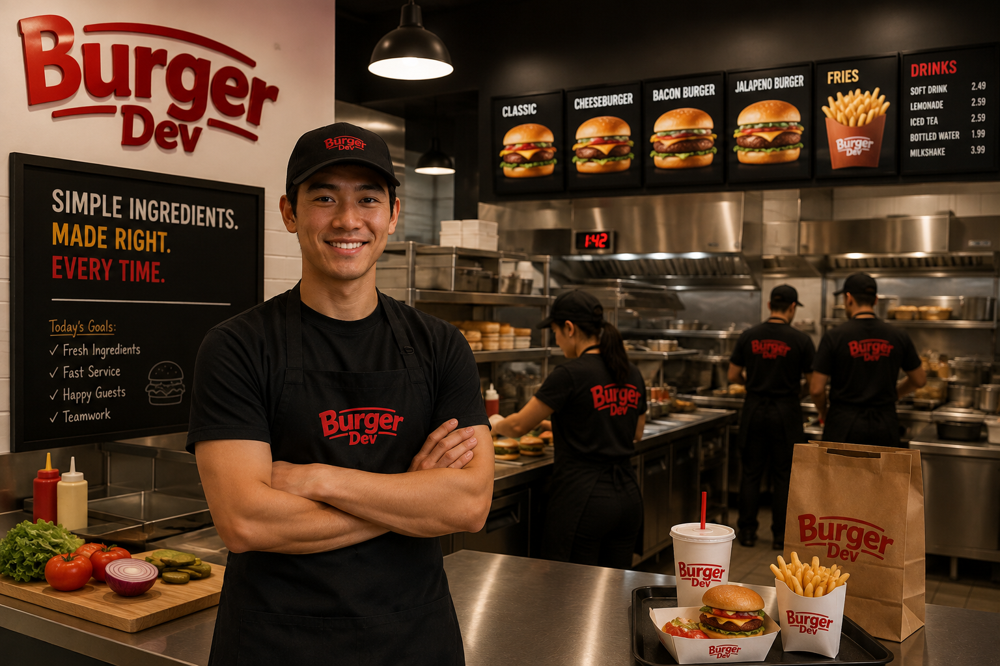

About Burger Dev
Great food should be simple, consistent, and built with the same care and precision as great software.
How We Began
Burger Dev started with a simple idea: combine the comfort of classic burger spots with the clean, modern style of today's technology culture.
What began as a creative concept around bold branding and handcrafted food quickly evolved into a vision for a fast-casual restaurant focused on quality, simplicity, and consistency.
Inspired by the mindset of building great products through thoughtful design and attention to detail, Burger Dev was created to deliver food and experiences that feel fresh, modern, and intentionally crafted.


Our Mission
At Burger Dev, our mission is to serve high-quality burgers, fries, and handcrafted meals using fresh ingredients, efficient service, and a modern customer experience.
We believe great food should be simple, consistent, and built with the same care and precision as great software.
Built the Burger Dev Way
Everything at Burger Dev is built around fresh ingredients, consistent quality, fast service, modern experiences, and keeping things simple.
From preparation in the kitchen to the final meal handed to a customer, every part of the process is designed to be efficient without sacrificing the quality of the food.
Fresh Ingredients. Consistent Quality. Fast Service. Modern Experiences. Simple Execution.

Our Vision
Our vision is to become a recognizable modern fast-casual burger brand that blends clean design, bold flavor, and technology-driven convenience into one unforgettable experience.
Burger Dev aims to redefine what a modern burger restaurant can feel like through simplicity, quality, and innovation.
The Burger Dev Standard
From our branding to our food, everything at Burger Dev is intentionally built to be simple, bold, and memorable.
Explore Our MenuBuilt Fresh. Served Fast.
Fresh ingredients, bold flavor, and a modern Burger Dev experience.
6997 N Glen Harbor Blvd
Glendale, AZ 85307
© 2026 Burger Dev. All Rights Reserved.